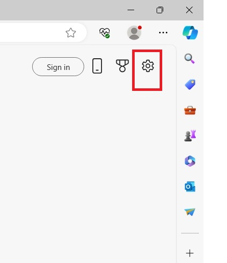
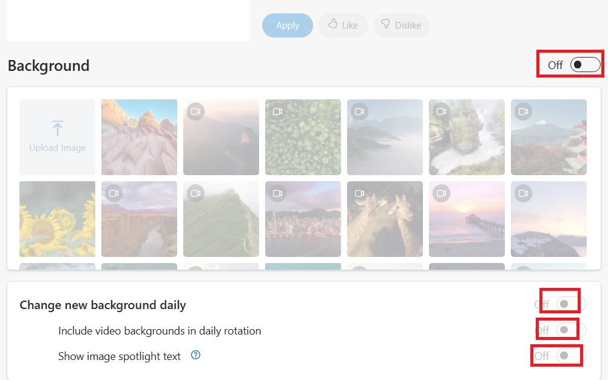

Replace murugesan_openssl with YOUR_USERNAME in the files below.
ACTION USING mksh.exe shell script
REDUCE POLLUTION AT EARTH DUE TO WASTAGE OF BATTERY
CREATE THE FOLLOWING TWO FILES AT YOUR LAPTOP:
01.) %USERPROFILE%\CheckLaptopBattery.bat
02.) C:\CheckLaptopBattery.vbs
CREATE A SHORTCUT OF C:\CheckLaptopBattery.vbs AT:
%USERPROFILE%\AppData\Roaming\MICROS~1\Windows\STARTM~1\Programs\Startup
@ECHO OFF
REM CONTENT OF C:\CheckLaptopBattery.cmd
REM UNUSED SYSTEM POWER BATTERY USED TO INCREASE POLLUTION.
IF NOT EXIST C:\RemovePlug.txt ECHO ALERT MESSAGE: REMOVE POWER CABLE AT LAPTOP NOW > C:\RemovePlug.txt
IF NOT EXIST C:\AddPlug.txt ECHO ALERT MESSAGE: ADD POWER CABLE AT LAPTOP NOW > C:\AddPlug.txt
SETLOCAL ENABLEDELAYEDEXPANSION
:START
FOR /F "skip=1 tokens=1" %%A in ('C:/Windows/System32/wbem/WMIC.exe Path Win32_Battery Get BatteryStatus ^| C:/Windows/System32/findstr.exe /r /v "^$"') DO SET BatteryStatus=%%A
FOR /f "tokens=2 delims==" %%E in ('WMIC.exe path Win32_Battery get EstimatedChargeRemaining /value') do (SET "BA=%%E")
IF %BA% GEQ 98 GOTO MOREPOWER
IF %BA% LEQ 35 GOTO LESSPOWER
TIMEOUT 120 >NUL 2>NUL
GOTO START
:MOREPOWER
IF %BatteryStatus% EQU 2 (
START /B C:\Windows\System32\notepad.exe C:\RemovePlug.txt
) ELSE (
C:\Windows\System32\taskkill.exe /f /im notepad.exe >NUL 2>NUL
)
TIMEOUT 10 >NUL 2>NUL
GOTO START
:LESSPOWER
IF %BatteryStatus% EQU 1 (
START /B START /B C:\Windows\System32\notepad.exe C:\AddPlug.txt
) ELSE (
C:\Windows\System32\taskkill.exe /f /im notepad.exe >NUL 2>NUL
)
TIMEOUT 10 >NUL 2>NUL
GOTO START
CONTENT OF FILE C:\CheckLaptopBattery.vbs
Dim WinScriptHost
Set WinScriptHost = CreateObject("WScript.Shell")
WinScriptHost.Run Chr(34) & "C:\Users\murugesan_openssl\CheckLaptopBattery.cmd" & Chr(34), 0
Set WinScriptHost = Nothing
After Windows r: rundll32.exe shell32.dll,Control_RunDLL intl.cpl
Click Additional settings. Set:
Time format: hh:mm tt
Date format: ddd dd-MMM-yyyy
First Way — execute inside cmd.exe:
C:\Windows\System32\reg.exe add "HKCU\Control Panel\International" /f /v sShortDate /t REG_SZ /d "ddd dd-MMM-yyyy" C:\Windows\System32\reg.exe add "HKCU\Control Panel\International" /f /v sLongDate /t REG_SZ /d "ddd dd-MMM-yyyy" C:\Windows\System32\reg.exe add "HKCU\Control Panel\International" /f /v sShortTime /t REG_SZ /d "hh:mm tt" C:\Windows\System32\reg.exe add "HKCU\Control Panel\International" /f /v sTimeFormat /t REG_SZ /d "hh:mm tt"Second way — keyboard shortcut:
Windows r → rundll32.exe shell32.dll,Control_RunDLL intl.cpl
Alt d → Ctrl tab tab → Short time: hh:mm tt → Long time: hh:mm tt
Ctrl tab → Short date: ddd dd-MMM-yyyy → Long date: ddd dd-MMM-yyyy → Alt A → Esc Esc
Redirect error(2) to NUL device to discard error output.
C:\> CD \ C:\> DIR /S /B *murugesan*openssl* 2>NUL
PROGRA~1 = "Program Files" PROGRA~2 = "Program Files (x86)"
C:\> DIR /O:D /A /X C:\ | C:\Windows\System32\find.exe "Program Files" Tue 20-May-2003 06:00:AM <DIR> PROGRA~2 Program Files (x86) Wed 21-May-2003 03:00:AM <DIR> PROGRA~1 Program Files
C:\> C:\Windows\System32\query.exe user USERNAME SESSIONNAME ID STATE IDLE TIME LOGON TIME >murugesan_openssl console 38 Active 1+05:35 Tue 20-May-2003 06:00:AM C:\> C:\Windows\System32\net.exe user %USERNAME% | C:\Windows\System32\findstr.exe "logon" Last logon Tue 20-May-2003 06:00 AM
a) Windows x → o
b) batch file / mingw/cygwin commands → power.cmd → Windows r → power
@ECHO OFF
REM CONTENTS OF power.cmd
CLS
ECHO %CD%^> power
:LOOP_POWER_BATCH
C:\Windows\System32\wbem\WMIC.exe Path Win32_Battery Get BatteryStatus | C:\Windows\System32\find.exe "2" > NUL
IF %ERRORLEVEL% NEQ 0 (
ECHO POWER BATTERY PLUGGED OUT
) ELSE (
ECHO POWER BATTERY PLUGGED IN
)
FOR /f "TOKENS=2 DELIMS==" %%E in ('C:\Windows\System32\wbem\WMIC.exe PATH WIN32_BATTERY GET ESTIMATEDCHARGEREMAINING /VALUE') do (SET "Ba=%%E")
ECHO TITLE=POWER %Ba%%%
TITLE=POWER %Ba%%%
Shell script (mksh/bash):
#!/bin/mksh
/cygdrive/c/Windows/System32/wbem/WMIC.exe Path Win32_Battery Get BatteryStatus 2>&1 |\
/usr/bin/tr -d "\r" 2>>1 |\
/usr/bin/grep "2" >/dev/null 2>&1
Ret=$?
if [ 0 -eq $Ret ]; then echo "POWER BATTERY PLUGGED IN"
else echo "POWER BATTERY PLUGGED OUT"; fi
/cygdrive/c/Windows/System32/cmd.exe /c "C:\Windows\System32\wbem\WMIC.exe PATH WIN32_BATTERY GET ESTIMATEDCHARGEREMAINING /VALUE" 2>&1 |\
/usr/bin/tr -d "\r" 2>>1 | /usr/bin/grep -v "^$" | /usr/bin/sed "s/.*=//;" |\
/usr/bin/awk '{ printf("POWER PERCENTAGE %s%\n", $0); }'
C:\Windows\System32\wbem\WMIC.exe PATH Win32_Battery Get EstimatedChargeRemaining /format:value |^ C:\Windows\system32\find.exe "EstimatedChargeRemaining="
b. Where proxy server port number saved at Windows operating system?
C:\Windows\System32\inetcpl.cplenable.cmd:
@ECHO OFF C:\Windows\System32\reg.exe add "HKCU\Software\Microsoft\Windows\CurrentVersion\Internet Settings" ^ /v ProxyEnable /t REG_DWORD /d 1 /f ECHO ENABLED PROXYdisable.cmd:
@ECHO OFF C:\Windows\System32\reg.exe add "HKCU\Software\Microsoft\Windows\CurrentVersion\Internet Settings" ^ /v ProxyEnable /t REG_DWORD /d 0 /f ECHO DISABLED PROXYnetwork.cmd — check proxy status:
@ECHO OFF
C:\Windows\System32\reg.exe query "HKCU\Software\Microsoft\Windows\CurrentVersion\Internet Settings" 2>&1 |^
tr.exe -d "\r" 2>>1 | grep.exe -i ProxyEnable |^
gawk.exe '{ if( "0x1" == $NF) printf("PROXY AT ENABLED STATUS\n"); else printf("PROXY AT DISABLED STATUS\n"); }'
C:\Windows\System32\appwiz.cpl
C:\Windows\System32\control.exe
Open WINWORD.EXE → Press Alt f t p → Press Alt a → Add autocorrect entry:
| Replace: | With: |
| openssl | murugesan openssl |
| C:\PROGRA~2\MICROS~2\root\Office16\lync.exe |
| %USERPROFILE%\AppData\Local\Microsoft\Teams\Update.exe --processStart "Teams.exe" |
| C:\PROGRA~2\MICROS~2\root\Office16\OUTLOOK.EXE |
| C:\PROGRA~2\MICROS~2\root\Office16\WINWORD.EXE | C:\PROGRA~1\MICROS~2\root\Office16\WINWORD.EXE |
| C:\PROGRA~2\MICROS~2\root\Office16\EXCEL.EXE | C:\PROGRA~1\MICROS~2\root\Office16\EXCEL.EXE |
| C:\PROGRA~2\MICROS~2\root\Office16\POWERPNT.EXE | C:\PROGRA~1\MICROS~2\root\Office16\POWERPNT.EXE |
| C:\PROGRA~2\TEAMVI~1\TEAMVI~1.EXE |
| C:\Windows\System32\notepad.exe |
| C:\Windows\System32\inetsrv\InetMgr.exe |
| C:\Windows\regedit.exe |
| C:\PROGRA~2\NOTEPA~1\NOTEPA~1.EXE |
| C:\PROGRA~2\MICROS~1\Edge\Application\msedge.exe |
| C:\PROGRA~2\MIEFB9~1\Common7\IDE\Ssms.exe |
| C:\PROGRA~2\MIB055~1\2022\ENTERP~1\Common7\IDE\devenv.exe |
| C:\PROGRA~1\MOZILL~1\firefox.exe |
| C:\PROGRA~1\Google\Chrome\Applic~1\chrome.exe |
| C:\Windows\System32\PING.EXE |
| C:\Windows\System32\TRACERT.EXE |
| C:\Windows\System32\find.exe |
| C:\Windows\System32\findstr.exe |
| C:\Windows\System32\NETSTAT.EXE |
| C:\Windows\System32\inetcpl.cpl |
| C:\Windows\System32\mblctr.exe |
| C:\Windows\System32\compmgmt.msc |
| C:\PROGRA~1\WindowsApps\MIF7A9~1.0_X\PaintApp\mspaint.exe |
| C:\Windows\System32\control.exe |
| C:\Windows\System32\calc.exe | https://win7games.com/download/oldcalcWin11Win10.zip |
| C:\Windows\System32\osk.exe |
| C:\Windows\System32\Taskmgr.exe |
| C:\Windows\System32\shutdown.exe |
| C:\Windows\System32\ipconfig.exe |
| C:\Windows\System32\mstsc.exe |
| C:\Windows\System32\query.exe |
| C:\Windows\explorer.exe |
| C:\Windows\System32\compmgmt.msc /s (Windows r) |
C:\Windows\System32\reg.exe query "HKCU\SOFTWARE\Microsoft\Windows\CurrentVersion\Explorer\RunMRU"
Classified as Microsoft Highly Confidential
How to remove?
Open that document → At top menu bar drill down "Highly Confidential" → Select General
This removes the Classified statement from beginning and end of each page inside that *.docx file.
Press keys simultaneously:
| Ctrl | Shift | 8 |
Open C:\Windows\regedit.exe → Navigate to:
HKEY_CURRENT_USER\SOFTWARE\Microsoft\Command Processor
Right click → New String Value → Name: Autorun
Value Data: C:\Users\murugesan_openssl\YourFileName.cmd
Contents of YourFileName.cmd:
C:\Windows\System32\icacls.exe "%USERPROFILE%\Favorites\Links" /Setintegritylevel (OI)(CI)Medium >NUL 2>NUL C:\Windows\System32\icacls.exe "%CD%" /Setintegritylevel (OI)(CI)Medium >NUL 2>NUL SET TITLE=%USERDNSDOMAIN:~0,8%\%USERNAME% CD /D %USERPROFILE%
Open putty.exe → after login run: /usr/bin/date "+%d-%b-%Y"
Double click that dd-mmm-yyyy date → "Create event" appears/not appearing?
Steps:
01. Press Windows i OR Start menu → Settings
02. Click System → Clipboard
03. At Suggested actions → Enable/Disable "suggested actions" to handle create/remove events at putty.exe
Create CleanAdvertisement.cmd. Open command prompt as administrator and execute it.
@ECHO OFF GOTO START_MENU_EXCEPTION_01 :START_MENU_EXCEPTION_01 SET AMAZON_URL_FILE=C:\PROGRA~3\MICROS~1\Windows\STARTM~1\Programs\Amazon.url IF NOT EXIST %AMAZON_URL_FILE% ECHO Amazon.url NOT FOUND AT WINDOWS START MENU && GOTO START_MENU_EXCEPTION_02 IF EXIST %AMAZON_URL_FILE% DEL /P %AMAZON_URL_FILE% :START_MENU_EXCEPTION_02 SET AGODA_URL_FILE=C:\PROGRA~3\MICROS~1\Windows\STARTM~1\Programs\Agoda.url IF NOT EXIST %AGODA_URL_FILE% ECHO Agoda.url NOT FOUND AT WINDOWS START MENU && GOTO START_MENU_EXCEPTION_03 IF EXIST %AGODA_URL_FILE% DEL /P %AGODA_URL_FILE% :START_MENU_EXCEPTION_03 SET PLANET_URL_FILE=C:\PROGRA~3\MICROS~1\Windows\STARTM~1\Programs\PLANET~1.URL IF NOT EXIST %PLANET_URL_FILE% ECHO PLANET~1.URL NOT FOUND AT WINDOWS START MENU && GOTO END IF EXIST %PLANET_URL_FILE% DEL /P %PLANET_URL_FILE% :END
Open C:\Windows\regedit.exe → Navigate to:
HKCU\Software\Microsoft\Windows\CurrentVersion\Explorer\Advanced
Create: Start_ShowClassicMode (DWORD 32-bit) = 1 → Restart system
Verify via cmd.exe:
C:\Windows\system32\reg.exe query "HKCU\Software\Microsoft\Windows\CurrentVersion\Explorer\Advanced" | C:\Windows\System32\find.exe "Start_ShowClassicMode" OUTPUT: Start_ShowClassicMode REG_DWORD 0x1
Press Windows I → Click Personalization → Click Start → Disable:
a. Show recently added apps
b. Show most used apps
c. Show recently opened items in Start, Jump Lists, and File Explorer
d. Show recommendations for tips, shortcuts, new apps, and more
Create a batch file:
@ECHO OFF START /B C:\PROGRA~1\WindowsApps\Microsoft.ScreenSketch_11.2209.2.0_x64__8wekyb3d8bbwe\ScreenSketch.exe REM Search ScreenSketch.exe path: REM C:> CD /D C:\PROGRA~1\WindowsApps\ REM C:> DIR/S /B ScreenSketch.exeSave as snippingtool.cmd → Add that directory to PATH environment variable
After this: Windows r → snippingtool → works
01.a — Remove language via PowerShell (Administrator):
$LangList = Get-WinUserLanguageList $MarkedLang = $LangList | where LanguageTag -eq "<LANGUAGECODE>" $LangList.Remove($MarkedLang) Set-WinUserLanguageList $LangList -Force01.c — Disable ENG from taskbar via cmd.exe (Administrator):
@ECHO OFF
C:\Windows\System32\reg.exe query "HKCU\Software\Microsoft\CTF\LangBar" | C:\Windows\System32\find.exe "ShowStatus" | C:\Windows\System32\find.exe "0x4"
IF %ERRORLEVEL% EQU 0 (
ECHO "LangBar ShowStatus 0x4 exists"
) ELSE (
ECHO Yes | C:\Windows\System32\reg.exe add "HKCU\Software\Microsoft\CTF\LangBar" /f /v ShowStatus /t REG_DWORD /d 4
)
C:\Windows\System32\reg.exe query "HKCU\Software\Microsoft\CTF\LangBar"
LOGOFF AND RELOGIN
| ShowStatus value | ENG on taskbar? |
| 0x3 | Yes |
| 0x4 | No |
02 — Disable Search bar: Right click taskbar → Properties → Disable Show search option
03 — Keep Start Menu at Left Side:
Start → Settings → Personalization → Taskbar → Task bar items → Hide Search
Click Taskbar behaviours:
a. Select Left at Taskbar alignment
b. Disable "Automatically hide taskbar"
c. Select "Show seconds in system tray clock"
C:\Windows\System32\reg.exe query HKCU\SOFTWARE\Microsoft\Windows\CurrentVersion\Explorer\Advanced | C:\Windows\System32\findstr.exe "ShowStatusBar" C:\Windows\System32\reg.exe add HKCU\SOFTWARE\Microsoft\Windows\CurrentVersion\Explorer\Advanced /f /v ShowStatusBar /t REG_DWORD /d "1"
ECHO C:\Windows\System32\runas.exe /profile /user:%USERDOMAIN%\%USERNAME% C:\Windows\System32\cmd.exe C:\Windows\System32\runas.exe /profile /user:%USERDOMAIN%\%USERNAME% C:\Windows\System32\cmd.exeWhen typing password at command prompt, the password won't be displayed.
DO NOT REINSTALL WINDOWS
Press Start Menu → Open Settings → Click Network & Internet → Click Proxy → Click Edit under Manual Proxy Setup
TAKE A SNAPSHOT OF CURRENT PROXY SETTINGS BEFORE PERFORMING FOLLOWING ACTION
ENABLE/DISABLE Proxy Server → After disabling proxy server the network started working.
Open notepad++.exe → Settings → Preferences (Alt t p)
Disable: "Enable notepad++ auto-updater"
Settings → Preferences → Auto-completion → Disable: "Enable auto-completion on each input"
Open cmd.exe (Administrator):
CD /D C:\PROGRA~2\notepad++ IF EXIST uninstall.exe MOVE uninstall.exe uninstall.ORIGINAL.exe CD /D .\updater IF EXIST GUP.exe MOVE GUP.exe GUP.ORIGINAL.exeClose and re-open notepad++.exe again.
Purpose: Connect computer/laptop to wireless network, access internet, transfer files.
Open: https://www.tp-link.com/no/support/download/archer-t600u-nano
Download (XP zip — works on Windows 11):
https://static.tp-link.com/2019/201905/20190524/Archer%20T600U%20Nano_V1_190520_WinXP.zip
Downloaded and successfully installed at Windows 11 Home Single Language on Mon 11-Sep-2023 IST.
Windows r → control.exe → View by Category → Hardware and Sound → View devices and printers
→ Printers & scanners → Click your Default printer → Scroll down → More devices and printers settings
→ Double click printer → Double click "See What's Printing"
In cmd.exe compare tasklist before/after opening printer window to find its rundll32.exe command.
Create shortcut to that command in %USERPROFILE%\Favorites\Links
C:\Windows\System32\rundll32.exe fdprint,InvokeTask /oq "{9009EE99-5ED8-5B4E-9FC6-2ED5D5E2F210}"
Scanner shortcut example:
"C:\PROGRA~1\WindowsApps\Microsoft.WindowsScan_6.3.9654.17133_x64__8wekyb3d8bbwe\scanapp.exe" -ServerName:App.AppXaxamg5eesqyjpqktbt1zkpbb33rtkxjx.mca
Error 1064: An Exception occurred in the service when handling the control request.
01) Execute SQL:
UPDATE SQLSYSTEMVARIABLES SET VALUE = 0 WHERE PARM = 'CONFIGURATIONMODE';02) Restart IIS web server (Administrator privileges):
C:\Windows\SysWOW64\iisreset.exe
Create a shortcut to:
C:\Windows\System32\mblctr.exe
Create a shortcut to:
%windir%\system32\compmgmt.msc /s
C:\Windows\System32\NETSTAT.EXE -nato | C:\Windows\System32\find.exe "LISTEN"
C:\> c:\Windows\System32\NETSTAT.EXE -nato | c:\Windows\System32\findstr.exe "9017 Address" Proto Local Address Foreign Address State PID Offload State TCP 127.0.0.1:9017 0.0.0.0:0 LISTENING 5264 InHost TCP 127.0.0.1:9017 127.0.0.1:49694 ESTABLISHED 5264 InHost C:\> c:\Windows\System32\NETSTAT.EXE -nato | c:\Windows\System32\findstr.exe "9017 Address" | tasklist /fi "PID eq 5264" Image Name PID Session Name Session# Mem Usage TeamViewer_Service.exe 5264 Services 0 26,724 K
01) Open: https://github.com/valinet/ExplorerPatcher/releases
02) Download ep_setup.exe
03) Execute ep_setup.exe as Administrator
04) If crash dumps accumulate at %USERPROFILE%\AppData\Local\CrashDumps remove:
rm explorer.exe*.dmp / rm SearchHost.exe*.dmp / rm HxTsr.exe*.dmp
05) Execute ep_setup.exe as Administrator again
Batch script DisplayFavoritesLink.cmd:
@ECHO OFF IF NOT EXIST %USERPROFILE%\Downloads\ep_setup.exe ECHO DOWNLOAD ep_setup.exe from https://github.com/valinet/ExplorerPatcher/releases IF NOT EXIST %USERPROFILE%\Downloads\ep_setup.exe GOTO EOF C:\Windows\System32\whoami /groups | C:\Windows\System32\findstr.exe /B BUILTIN\Administrators | C:\Windows\System32\findstr.exe /C:"Enabled group" >NUL && GOTO :EXECUTE_USING_ADMIN_PRIVILEGE ECHO EXECUTE %0 using ADMINISTRATOR PRIVILEGES. GOTO EOF :EXECUTE_USING_ADMIN_PRIVILEGE c:\WINDOWS\system32\taskkill.exe /f /im explorer.exe >NUL 2>NUL c:\WINDOWS\system32\taskkill.exe /f /im SearchHost.exe >NUL 2>NUL c:\WINDOWS\system32\taskkill.exe /f /im HxTsr.exe >NUL 2>NUL IF EXIST C:\PROGRA~1\EXPLOR~1\ep_setup.exe C:\PROGRA~1\EXPLOR~1\ep_setup.exe GOTO EOF :EOF
C:\Windows\System32\icacls.exe %CD% /grant %USERNAME%:(OI)(CI)F /T C:\Windows\System32\icacls.exe %CD% /grant murugesan_openssl:(OI)(CI)F /T
Open about:profiles in firefox.exe
Click "Create New Profile" → Next → Choose Folder → select:
%USERPROFILE%\AppData\Roaming\Mozilla\Firefox\Profiles\MozillaProfile
Replace "Default User" with "Default_User" → Next → Close and reopen firefox.exe
Method 1 — about:config: Open about:config → Search: app.update.auto → Change boolean to false
Method 2 — policies.json: Create C:\PROGRA~1\Mozilla Firefox\distribution\policies.json:
{
"policies": {
"AppUpdateURL": "http://127.0.0.1",
"DisableAppUpdate": true,
"DisableFirefoxStudies": true,
"DisableSystemAddonUpdate": true,
"DisableTelemetry": true,
"ExtensionUpdate": false
}
}
Method 3 — Stop/disable MozillaMaintenance service
Method 4 — gzip updater executables:
gzip C:\PROGRA~1\Mozilla Firefox\updater.exe gzip C:\PROGRA~1\Mozilla Firefox\maintenanceservice.exe gzip C:\PROGRA~1\Mozilla Firefox\maintenanceservice_installer.exe gzip C:\PROGRA~1\Mozilla Firefox\default-browser-agent.exe gzip C:\PROGRA~1\Mozilla Firefox\crashreporter.exe gzip C:\PROGRA~1\Mozilla Firefox\pingsender.exeRemove Firefox Windows Store package to stop background updates:
rm.exe -rf "C:\PROGRA~1\WindowsApps\Mozilla.Firefox_138.0.4.0_x64__n80bbvh6b1yt2"
Open WINWORD.EXE → Type first line → Press Enter → Type ---- hyphens → Press Enter → horizontal line inserted
Keep cursor above that line → Click Home from menu bar → Drill down Borders (central bottom area) → Click No Border
DELETE the DWORD AutoSaveByDefaultUserChoice from:
HKEY_CURRENT_USER\Software\Microsoft\Office\16.0\Word HKEY_CURRENT_USER\Software\Microsoft\Office\16.0\Excel HKEY_CURRENT_USER\Software\Microsoft\Office\16.0\PowerPointExecutable locations:
C:\PROGRA~2\MICROS~2\root\Office16\WINWORD.EXE C:\PROGRA~2\MICROS~2\root\Office16\POWERPNT.EXE C:\PROGRA~2\MICROS~2\root\Office16\EXCEL.EXE
Create the shortcut or batch file at:
%USERPROFILE%\AppData\Roaming\Microsoft\Windows\STARTM~1\Programs\StartupCan use batch file, command file, visual basic files, or any executables.
Create C:\Users\murugesan_openssl\murugesanopenssl.cmd:
@ECHO OFF START /B mode 800 >NUL 2>NUL C:\Windows\System32\icacls.exe "%userprofile%\Favorites\Links" /Setintegritylevel (OI)(CI)Medium >NUL 2>NUL SET TITLE=%USERDNSDOMAIN:~0,8%\%USERNAME% CD /D %USERPROFILE%Open regedit.exe → Go to: HKEY_CURRENT_USER\SOFTWARE\Microsoft\Command Processor
Create New String Value → Name: Autorun → Value: full path to murugesanopenssl.cmd
Verify:
C:\Windows\System32\reg.exe query "HKCU\SOFTWARE\Microsoft\Command Processor"
https://myaccount.microsoft.com
C:\Windows\System32\rundll32.exe shell32.dll,Control_RunDLL appwiz.cpl OR C:\Windows\System32\appwiz.cpl
#!/bin/mksh count="y"; for NETWORKNAMES in $(/cygdrive/c/Windows/System32/netsh.exe wlan show profile 2>&1 |\ /usr/bin/tr -d "\r" 2>>1 |\ /usr/bin/grep "All User Profile" |\ /usr/bin/sed "s/.*: //;s/ /SPACE/g;") do CURNETWORKNAME=$(echo "$NETWORKNAMES" | /usr/bin/sed "s/SPACE/ /g;") /cygdrive/c/Windows/System32/netsh.exe wlan show profile name="$CURNETWORKNAME" key="clear" |\ /usr/bin/tr -d "\r" 2>>1 |\ /usr/bin/grep -E "Key Content|SSID name" |\ /usr/bin/sed "s/.*: \"//;s/\"//;" |\ /usr/bin/tr "\n" " " echo done
Day 1 — Pause download at 2.4 GB → MOVE the .part file:
MOVE WINDOWS.X64_213000_db_home.zip.part WINDOWS.X64_213000_db_home.zip.part.BACKUP01Day 2 — Login, start same download again, immediately pause → COPY backup over current .part file:
COPY WINDOWS.X64_213000_db_home.zip.part.BACKUP01 WINDOWS.X64_213000_db_home.zip.partRight click in firefox → Continue → Download resumes from where it left off.
Press Alt f t → Select Advanced OR File → Options → Advanced → "Start Microsoft Outlook in this folder"
Click Browse → Drill down to Search folders of RequiredEmail (not the other account)
Select Unread Email → OK → OK
If Unread Email not found: Drill down correct account → Right click Search Folders → New Search Folder → Unread Email → OK
Close and reopen Microsoft Outlook.
| Setting | URL |
| Downloads | edge://settings/downloads |
| Search Engines | edge://settings/searchEngines |
| Home page | edge://settings/defaultBrowser |
| Default browser | edge://settings/startHomeNTP |
| JavaScript | edge://settings/content/javascript |
| Setting | How |
| Downloads | about:downloads |
| Search engine | Tools → Settings → Default Search Engine |
| Home page | Tools → Settings → Home page |
| Default browser | Start menu → Default apps → select browser for .htm/.html |
| JavaScript | Tools → Settings → javascript.enabled → True/false |
Press Alt f s → At left pane bottom → Click Reset settings
CREATE A BATCH FILE (.cmd or .bat FILE) AT ANY DIRECTORY. Example: C:\murugesan_openssl.cmd
Open:
%USERPROFILE%\AppData\Roaming\Microsoft\Windows\Start Menu\Programs\StartupCreate a shortcut here pointing to that batch file.
Open cmd.exe:
MOVE %USERPROFILE%\Desktop\qwe %USERPROFILE%\Desktop\openssl_testingRight click at desktop → Click "Undo rename" → click Cancel
Open cmd.exe:
MOVE "%USERPROFILE%\New Folder" %USERPROFILE%\Desktop\ 1 dir(s) moved.Right click at desktop → Click "Undo move" → click Cancel
| Step | Action |
| 01 | Right click Exclamation mark at left pane → Click "Fix account" |
| 02 | Click "Attention required" |
| 03 | Click "Fix account" |
C:\PROGRA~2\MICROS~2\root\Office16\OUTLOOK.EXEWhen searching → Disable the "No Formatting" button to get expected search results.
a) Desktop background: Start menu → type "background" → Click "Choose your desktop background" → Select solid color → select black
b) Lock screen background (Windows 11): Start menu → type "background" → Click "Change your lock screen background"
| Personalize your lock screen | Click picture and select black.jpg |
| Get fun facts, trips on lock screen | Disable this option |
| Lock screen status | Select Mail or Calendar or Weather |
| Show lock screen background on sign-in screen | Enable this option |
c) Windows 10 Pro: Windows i → Search "lock" → Lock screen settings → Click picture → Browse and use black image.jpg
a) Windows r → type:
C:\Windows\System32\cmd.exe /c "START /B /MAX C:\PuttyDirectory\putty.exe [email protected]"b) Create maximum_putty.cmd batch file → add its directory to PATH → Windows r → maximum_putty
c) In %USERPROFILE%\Favorites\Links → Right click putty shortcut → Properties → Run → select Maximized
a) Session Logging → C:\Users\%USERPROFILE%\&H_&M_&Y_&T.txt
b) Window → Lines of scrollback → 999999999
c) Appearance → Font settings
d) Behaviour → System menu appears on ALT-space
e) Connection → SSH → Auth → X11 → Enable X11 forwarding
Reference: PuttyLog.html
ON Windows 11: Windows r → cmd.exe → Press OK → Right click cmd.exe in taskbar → Settings → Launch parameters → Select Maximized → Disable "Let Windows decide" → Click Save
ON Windows 10: Windows r:
cmd.exe /c start /max cmd.exePress Enter
01) Check laptop battery background process
02) firefox.exe
03) putty.exe @127.0.0.1
04) TextPad.exe or notepad++.exe
Two ways:
a) Create a shell script / batch file calling applications in sequence with START /B /MAX
b) Create startup.exe (compiled C program) placed at Startup directory. Key actions: ignore signals, fork/setsid, check battery, start firefox, start putty, start editor.
Verify:
C:\> ps.exe -ea | grep.exe -E -v "grep$|ps$" C:\> C:\Windows\System32\tasklist.exe | tr.exe -d "\r" | grep.exe -E "bash.exe|firefox.exe|sleep.exe|PID|notepad\+\+.exe"
Windows r →
rundll32.exe C:\WINDOWS\System32\shell32.dll,Control_RunDLL C:\WINDOWS\System32\intl.cplClick OK → Additional settings (Alt d) → Click time (Ctrl tab twice)
Replace hh:mm:ss tt with hh:mm tt → Click Apply → OK → OK → Restart Windows and relogin.
Error: "You can't remove NULL SID because this object is inheriting permissions from its parent."
Open cmd.exe as Administrator, current user, and the user who installed cygwin. Execute:
C:\> CD /D %HOME% C:\cygwin\home\openssl_murugesan> CD ..\.. C:\cygwin> C:\Windows\System32\icacls.exe "%CD%" /grant %USERNAME%:(F) /T /C /Q
rundll32.exe C:\WINDOWS\System32\shell32.dll,Control_RunDLL C:\WINDOWS\System32\main.cplClick Pointers (Ctrl tab) → Select scheme: Windows Black (extra large) (system scheme) → Normal Select → Press OK
01. Open C:\Windows\System32\cmd.exe → Click drill-down option → Click Settings
02. Default terminal application → Select Windows Console Host → Save → Close cmd.exe
03. Open cmd.exe again → Right click → Properties → Options → Disable:
a) QuickEditMode
b) Use Ctrl+Shift+C/V as Copy/Paste
Press OK
Reference: Contents of Windows_clear_cache file using mksh.exe at windows
Download Netscape 6 (6.2.3): http://www.oldversion.com/windows/netscape
After installation:
netscp.exe -edit OR netscp -editAdd Netscape directory to PATH environment variable. Use to edit HTML files at localhost.
| Binary/Shortcut Name | Icon/Icon File |
| C:\Windows\System32\cmd.exe | C:\Windows\System32\cmd.exe |
| C:\PROGRA~1\WindowsApps\MICROS~1.240\msteams.exe | C:\PROGRA~1\WindowsApps\MICROS~1.240\msteams.exe |
| C:\YOURDIR\zoom.exe | zoom.ico |
| C:\PROGRA~1\WindowsApps\MIF7A9~1.0_X\PaintApp\mspaint.exe | mspaint.exe |
| C:\PROGRA~1\WindowsApps\MICROS~1.171\scanapp.exe | scanner.ico |
| C:\PROGRA~2\NOTEPA~1\NOTEPA~1.EXE | C:\PROGRA~2\NOTEPA~1\NOTEPA~1.EXE |
| C:\PROGRA~2\TextPad8\TextPad.exe | C:\PROGRA~2\TextPad8\TextPad.exe |
| C:\PROGRA~2\MICROS~1\Edge\Application\msedge.exe | msedge.exe |
| C:\YOURDIR\putty.exe | putty.exe |
| C:\PROGRA~1\MOZILL~1\firefox.exe | firefox.exe |
Windows support teams (HP/DELL/ALL LAPTOP SERVICE) suggested reinstall — DO NOT REINSTALL.
Reference: Windows-Defender-High-CPU-Usage
67a) Open %windir%\System32\msconfig.exe → Select Services → Disable: A) Microsoft Edge update Service (edgeupdate), B) edgeupdatem, C) Windows Event log, D) Fax, E) Microsoft FTP Service, F) GameInput Service, G) Windows Mobile Hotspot Service, H) Phone Service, I) Smart Card, J) Smart Card Enumeration Service, K) Smart Card Removal Policy, L) Remote Desktop Configuration, M) Telephony, N) Remote Desktop Services, O) Visual Studio Standard Collector Service 150, P) Windows Update, Q) GameDVR and Broadcast Service, R-Y) Incredibuild services, Quick Access services, Realtek, UE Improvement Program
67b) Execute in powershell.exe (Administrator):
netsh advfirewall set allprofiles state off exitCreate Disable_Defender.cmd:
@ECHO OFF %windir%\System32\reg.exe add "HKLM\SYSTEM\ControlSet001\Services\MsSecFlt" /v "Start" /t REG_DWORD /d "4" /f >NUL 2>nul %windir%\System32\reg.exe add "HKLM\SYSTEM\ControlSet001\Services\SecurityHealthService" /v "Start" /t REG_DWORD /d "4" /f >NUL 2>nul %windir%\System32\reg.exe add "HKLM\SYSTEM\ControlSet001\Services\Sense" /v "Start" /t REG_DWORD /d "4" /f >NUL 2>nul %windir%\System32\reg.exe add "HKLM\SYSTEM\ControlSet001\Services\WdBoot" /v "Start" /t REG_DWORD /d "4" /f >NUL 2>nul %windir%\System32\reg.exe add "HKLM\SYSTEM\ControlSet001\Services\WdFilter" /v "Start" /t REG_DWORD /d "4" /f >NUL 2>nul %windir%\System32\reg.exe add "HKLM\SYSTEM\ControlSet001\Services\WdNisDrv" /v "Start" /t REG_DWORD /d "4" /f >NUL 2>nul %windir%\System32\reg.exe add "HKLM\SYSTEM\ControlSet001\Services\WdNisSvc" /v "Start" /t REG_DWORD /d "4" /f >NUL 2>nul %windir%\System32\reg.exe add "HKLM\SYSTEM\ControlSet001\Services\WinDefend" /v "Start" /t REG_DWORD /d "4" /f >NUL 2>nul %windir%\System32\reg.exe delete "HKLM\SOFTWARE\Microsoft\Windows\CurrentVersion\Run" /v "SecurityHealth" /f >NUL 2>nul %windir%\System32\reg.exe add "HKLM\SYSTEM\ControlSet001\Services\SgrmAgent" /v "Start" /t REG_DWORD /d "4" /f >NUL 2>nul %windir%\System32\reg.exe add "HKLM\SYSTEM\ControlSet001\Services\SgrmBroker" /v "Start" /t REG_DWORD /d "4" /f >NUL 2>nul %windir%\System32\reg.exe add "HKLM\SOFTWARE\Microsoft\Windows\CurrentVersion\Explorer" /v "SmartScreenEnabled" /t REG_SZ /d "Off" /f >NUL 2>nul GOTO :EOF67c) Open C:\Windows\System32\services.msc and disable:
| # | Service name | Display name | Startup type |
| 01 | wuauserv | Windows Update | Manual |
| 02 | WSearch | Windows Search | Disabled |
| 03 | mpssvc | Windows Defender Firewall | Disabled |
| 04 | bthserv | Bluetooth Support Service | Disabled |
| 05 | sc.exe config ACCSvc start= disabled / sc.exe config LanmanServer start= disabled / sc.exe config GameInputSvc start= disabled / sc.exe config AdobeARMservice start= disabled | ||
67d) Press Start → Settings → Privacy & security → Windows Security → Virus & threat protection → Manage settings → disable all options.
Open regedit.exe (Administrator) → create REG_DWORD at HKLM\SOFTWARE\Policies\Microsoft\Windows Defender:
DisableAntiSpyware=1, DisableRealtimeMonitoring=1, DisableAntiVirus=1, DisableSpecialRunningModes=1, DisableRoutinelyTakingAction=1, ServiceKeepAlive=0, AllowFastServiceStartup=0
Create key "Real-Time Protection" inside Windows Defender → add: DisableBehaviorMonitoring=1, DisableOnAccessProtection=1, DisableRealtimeMonitoring=1, DisableScanOnRealtimeEnable=1
67e) Open C:\Windows\System32\msconfig.exe → Boot → Enable Safe boot → OK → Restart
After restart → open regedit.exe → navigate to HKEY_LOCAL_MACHINE\SYSTEM\CurrentControlSet\Services\WinDefend
Rename key from "WinDefend" to "WinDefend-BLOCKED"
Open msconfig.exe → Disable Safe boot → Reboot
C:\Users\%USERNAME%\AppData\Roaming\Helios\TextPad\8\ConfigState.xml
A) Steps at MOBILE:
| 1 | Open mobile |
| 2 | Click Settings |
| 3 | More connection settings |
| 4 | Mobile hotspot and tethering → Mobile hotspot |
| 5 | Click MORE (top right corner) |
| 6 | Configure Mobile hotspot |
| 7 | Set Network name, password, Security=WPA2 PSK → SAVE |
| 8 | MORE → Timeout settings → Never timeout |
| 9 | MORE → Allowed devices → manage allowed devices |
| 10 | Enable Mobile hotspot button |
| 11 | Maintain mobile battery 97%-100% |
B) Steps at Computer/Laptop:
Windows i → Network & Internet → Wi-Fi → Manage known networks
If multiple entries (India_BSNL_Sindhubath1, 2, 3...) → Click forget on all duplicates
Click arrow → Advanced Wi-Fi network properties → Edit → Security: WPA2-Personal, AES, enter password → OK
Shutdown Windows → Start → relogin → connect to hidden network → provide name and password
If exceeded allowed device count error: delete existing device in mobile hotspot allowed devices
Open: https://support.microsoft.com/contactus
Sign in with Outlook email → Click Windows → Get Home support → type "Windows" → Select "Troubleshoot activation issues in Windows" → Click Windows 11
Click Contact Support → Select "Microsoft 365 and office" → Technical Support → confirm
Click "Chat with a support agent in your web browser"
Download adb.exe (Android platform tools) for Windows.
Install USB Debugging from Play services on mobile.
Enable Developer Options on mobile: Settings → About Phone → Software information → tap Build number 5-6 times
Settings → Developer Actions → Enable: On, Stay awake, USB debugging
Connect mobile via USB cable to computer.
#!/bin/bash /cygdrive/c/platform-tools/adb.exe devices 2>&1 | tr -d "\r" | grep -E -v "^$|List of devices attached" # For each device, check battery level: /cygdrive/c/platform-tools/adb.exe -s $devname shell dumpsys battery 2>&1 | tr -d "\r" | grep level | sed "s/ *level: //;s/$/%/;" /cygdrive/c/WINDOWS/System32/Wbem/WMIC.exe path Win32_Battery get EstimatedChargeRemaining /value 2>&1 | tr -d "\r" | grep -E -v "^$" | sed "s/EstimatedChargeRemaining=/Windows 11 LAPTOP POWER: /;s/$/%/;"
Open Task Manager (Ctrl Shift Esc) → Run new task → type:
taskkill /f /im explorer.exeOK → Again Run new task → type:
C:\Windows\explorer.exeOR via Windows r: same commands in sequence.
Open cmd.exe (Administrator) → search for olk.exe:
CD C:\PROGRA~1 DIR /S /B OLK.exe C:\PROGRA~1\WindowsApps\Microsoft.OutlookForWindows_1.2024.821.200_x64__8wekyb3d8bbwe\olk.exePress Windows r → use latest olk.exe path:
C:\PROGRA~1\WindowsApps\Microsoft.OutlookForWindows_1.2024.821.200_x64__8wekyb3d8bbwe\olk.exeAdd shortcut to %USERPROFILE%\Favorites\Links or Startup directory.
NO NEED TO REINSTALL WINDOWS 11
Download: https://win7games.com/download/oldcalcWin11Win10.zip
Unzip → run OldClassicCalc-2.0-setup as Administrator → installs to:
C:\PROGRA~1\OLDCLA~1\calc1.exeUse calc1.exe or: Windows r → calc → opens calc1.exe
Unable to open C:\Users\%USERNAME%\AppData\Local\Microsoft\WindowsApps\mspaint.exe
Found dmp files at %USERPROFILE%\AppData\Local\CrashDumps
NO NEED TO REINSTALL WINDOWS 11
Download: https://win7games.com/download/ClassicPaint.zip
Unzip → run ClassicPaint-1.1-setup.exe as Administrator → installs to:
C:\PROGRA~1\CLASSI~1\mspaint1.exeAdd C:\PROGRA~1\CLASSI~1 to PATH environment variable → use mspaint1.exe or mspaint.cmd
01) Open olk.exe
02) Click your email
03) Click Inbox
04) Click View at top menu
05) Click Sync below top menu
Open procexp.exe → Search TextInputHost.exe → Right click → Open file location → Take backup
Execute (Administrator cmd.exe):
taskkill /f /im TextInputHost.exeRemove TextInputHost.exe. Example location:
/cygdrive/c/Windows/SystemApps/MicrosoftWindows.Client.CBS_cw5n1h2txyewy/TextInputHost.exe
| # | Display name | Service name | Disable command |
| 00 | Web Threat Defense User Service | webthreatdefusersvc_1c1fc6894 | sc config "webthreatdefusersvc_1c1fc6894" start= disabled |
| 01 | Windows Remote Management (WS-Management) | WinRM | sc config "WinRM" start= disabled |
| 02 | Web Threat Defense Service | webthreatdefsvc | sc config "webthreatdefsvc" start= disabled |
| 03 | Microsoft Update Health Service | uhssvc | sc config "uhssvc" start= disabled |
| 04 | User Experience Improvement Program | UEIPSvc | sc config "UEIPSvc" start= disabled |
| 05 | Auto Time Zone Updater | tzautoupdate | sc config "tzautoupdate" start= disabled |
| 06 | OpenSSH Authentication Agent | ssh-agent | sc config "ssh-agent" start= disabled |
| 07 | Realtek Audio Universal Service | RtkAudioUniversalService | sc config "RtkAudioUniversalService" start= disabled |
| 08 | Remote Registry | RemoteRegistry | sc config "RemoteRegistry" start= disabled |
| 09 | Routing and Remote Access | RemoteAccess | sc config "RemoteAccess" start= disabled |
| 10 | Server | LanmanServer | sc config "LanmanServer" start= disabled |
| 11 | GameInput Service | GameInputSvc | sc config "GameInputSvc" start= disabled |
| 12 | Bluetooth Support Service | bthserv | sc config "bthserv" start= disabled |
| 13 | Bluetooth Audio Gateway Service | BTAGService | sc config "BTAGService" start= disabled |
| 14 | Acer Care Center | AcerCCAgentSvis | sc config "AcerCCAgentSvis" start= disabled |
| 15 | Adobe Acrobat Update Service | AdobeARMservice | sc config "AdobeARMservice" start= disabled |
| SQL Server services (green) — kept because Oracle database is used instead | |||
Installed: Netscape 6.2.3 at C:\PROGRA~1\NETSCA~1.23\netscp.exe
Installed: brave.exe for mobile charging alert.
After installation — remove/gzip the following unnecessary executables:
| Original file | Rename/gzip to |
| C:\PROGRA~1\NETSCA~1.23\regxpcom.exe | regxpcom.exe.gz |
| C:\PROGRA~1\NETSCA~1.23\ren8dot3.exe | ren8dot3.exe.gz |
| C:\PROGRA~1\NETSCA~1.23\xpicleanup.exe | xpicleanup.exe.gz |
| C:\PROGRA~1\NETSCA~1.23\uninstall\N6Uninst.exe | N6Uninst.exe.gz |
| C:\PROGRA~1\BRAVES~1\BRAVE-~1\APPLIC~1\chrome_proxy.exe | chrome_proxy.exe.gz |
| C:\PROGRA~1\BRAVES~1\BRAVE-~1\APPLIC~1\[version]\elevation_service.exe | elevation_service.exe.gz |
| C:\PROGRA~1\BRAVES~1\BRAVE-~1\APPLIC~1\[version]\notification_helper.exe | notification_helper.exe.gz |
| C:\PROGRA~1\BRAVES~1\BRAVE-~1\APPLIC~1\[version]\Installer\setup.exe | setup.exe.gz |
Open new tab (Ctrl t) → Click Settings → disable unnecessary options
Also: click "Edit Background" → Disable all options there
Error seen at Windows 11 (Dec-2024 IST):
The Recycle Bin on C:\ is corrupted. Do you want to empty the Recycle Bin for this drive?
Open cmd.exe as Administrator:
CD C:\$Recycle.Bin DIR /A <DIR> S-1-5-21-651189585-2582186959-2098595288-1003Open procexp.exe → Ctrl E → Search for that SID
Found: java.exe (apache webserver at localhost) was using this file
Execute:
taskkill.exe /f /im java.exeAfter this corrupted recycle bin error was resolved.
Execute the following command inside mksh.exe/bash.exe or any MINGW/CYGWIN shells:
[email protected] CYGWIN_NT-10.0-22631 MODEL x86_64 REL 3.5.4-1.x86_64 $ # Command inside mksh.exe/bash.exe or any MINGW/CYGWIN shells $ /cygdrive/c/WINDOWS/system32/cmd.exe /c "C:\\PROGRA~1\\MOZILL~1\\firefox.exe" $ # OR $ alias firefox='/cygdrive/c/WINDOWS/system32/cmd.exe /c "C:/PROGRA~1/MOZILL~1/firefox.exe"' $ firefox
Method 1:
1. Open new tab (Press Ctrl+T)
2. Click Settings and disable/provide following options at settings

Method 2:

Method 3:
Use same Settings and click Edit Background
Disable all the options there.

1. Open following URL at msedge.exe:
edge://settings/clearBrowsingDataOnClose
2. Enable your required options to clear
3. Close and reopen msedge.exe

Step 01: Uninstall OneDrive
Windows Key + R C:\Windows\System32\appwiz.cpl Uninstall OneDrive
Step 02: Modify Registry
Windows Key + R C:\Windows\regedit.exe Navigate to: HKEY_CURRENT_USER\SOFTWARE\Microsoft\Windows\CurrentVersion\Explorer\User Shell Folders Find the value of: Desktop Replace: %USERPROFILE%\OneDrive\Desktop With: %USERPROFILE%\Desktop
Step 03: Restart
Restart Windows and relogin.
Steps:
Windows Key + R C:\Windows\System32\taskschd.msc
Remove all invalid task scheduler entries and keep only essential tasks.

Recommended: Keep only Windows Update, Defragmentation, and Security Scans
Execute this bash script:
#!/bin/bash
for braveService in \
BraveElevationService \
brave \
bravem \
BluetoothUserService_4a7c737f \
BTAGService \
bthserv
do
/cygdrive/c/Windows/system32/sc.exe query $braveService 2>&1 | \
/usr/bin/tr -d "\r" 2>&1 | \
/usr/bin/grep STATE 2>&1 | \
/usr/bin/grep STOPPED >/dev/null 2>&1
Ret=$?
if [[ "BluetoothUserService_4a7c737f" = "$braveService" ]]
then
/cygdrive/c/Windows/system32/sc.exe query $braveService 2>&1 | \
/usr/bin/tr -d "\r" 2>&1 | \
/usr/bin/grep "does not exist" >/dev/null 2>&1
Ret=$?
if [[ 0 -ne $Ret ]]
then
/cygdrive/c/Windows/system32/sc.exe delete $braveService
fi
elif [[ 0 -eq $Ret ]]
then
/cygdrive/c/Windows/system32/net.exe START $braveService 2>&1 | \
/usr/bin/tr -d "\r" 2>&1 | \
/usr/bin/grep disabled >/dev/null 2>&1
Ret=$?
if [[ 0 -ne $Ret ]]
then
echo "sc.exe config $braveService start=disabled"
/cygdrive/c/Windows/system32/sc.exe config $braveService start=disabled
else
echo "brave service: $braveService was disabled"
fi
fi
done
Step 01: Open Settings
Press Windows Key + I at keyboard

Step 02: Lock Screen Settings
Search "lock" and click Lock screen settings

Step 03: Screen Timeout Settings
Scroll down and click Screen timeout Settings

Step 04: Set to Never
Click "Never" for all options:

Steps to find file usage:
1. Open taskmgr.exe (Task Manager)
2. Click Performance tab
3. Click Open Resource Monitor

4. Click CPU tab
5. Search your required file near Associated Handles
Example:
To search adb.log file at Windows:

Step 01: Customize Toolbar
1. Open firefox.exe
2. At top right corner, right-click using mouse
3. Click Customize Toolbar

Step 02: Add Search Option
DRAG THE Search option from bottom to top near right corner.

Click Done at bottom right corner of firefox

Step 03: Add Search Provider
Open: https://mycroftproject.com/google-search-plugins.html
Search your required search provider (example: google.co.in)
Click the link for your desired search engine
At top right corner of firefox, drill down the search option and add it

Step 04: Set as Default
Click Tools ⇒ Settings
At left pane click Search button
Select India search button as default

What are Short Names (8.3 Filename Format)?
Short names are legacy DOS-style names limited to 8 characters + 3-character extension (e.g., PROGRA~1 for "Program Files").
Step 01: Find Short Name of a File/Folder
Open cmd.exe
Navigate to your desired location and execute following command:
DIR /X /A
Example output:
F:\> CD "F:\Thunderbird" F:\> DIR /X /A Directory of F:\Thunderbird 10/15/2024 02:30 PM <DIR> THUNDE~1 Thunderbird 10/15/2024 02:31 PM <DIR> PROFIL~1 Profile 10/15/2024 02:32 PM 3,245,120 THUNDE~1 EXE thunderbird.exe
Step 02: Use Short Name in Command/Scripts
Instead of using:
F:\Thunderbird\thunderbird.exe
we can use:
F:\THUNDE~1\THUNDE~1.EXE
Or in batch scripts:
@ECHO OFF CD /D F:\THUNDE~1 START THUNDE~1.EXE
Step 03: Gzip Unnecessary .exe Files at Thunderbird
To reduce disk space, gzip the following unnecessary executable files:
#!/bin/bash
# Navigate to Thunderbird installation directory
cd "/cygdrive/f/THUNDE~1"
# List of files to gzip
files_to_gzip=(
"updater.exe"
"thunderbird.exe"
"rnpkeys.exe"
"rnp-cli.exe"
"plugin-container.exe"
"pingsender.exe"
"maintenanceservice_installer.exe"
"maintenanceservice.exe"
"crashreporter.exe"
"WSEnable.exe"
"crashhelper.exe"
)
# Gzip each file if it exists
for file in "${files_to_gzip[@]}"
do
if [[ -f "$file" ]]; then
echo "Gzipping: $file"
/usr/bin/gzip "$file"
else
echo "File not found: $file"
fi
done
echo "Gzip operation completed."
Alternative: Single Command Gzip
CD /D F:\THUNDE~1 gzip -v updater.exe rnpkeys.exe rnp-cli.exe plugin-container.exe pingsender.exe maintenanceservice_installer.exe maintenanceservice.exe crashreporter.exe WSEnable.exe crashhelper.exe
Step 04: Verify Gzipped Files
ls.exe -la F:\THUNDE~1\*.exe.gz
Important Notes:
• Short names are useful for batch scripts and when paths contain spaces
• Gzipped .exe files (.exe.gz) cannot be executed directly - use only for backup/storage
• To restore: gunzip filename.exe.gz
• To ungzip multiple files: gunzip *.exe.gz
• Short names reduce from long path like "C:\Program Files" to "C:\PROGRA~1"
• Useful in DOS batch files and legacy scripts that don't handle spaces